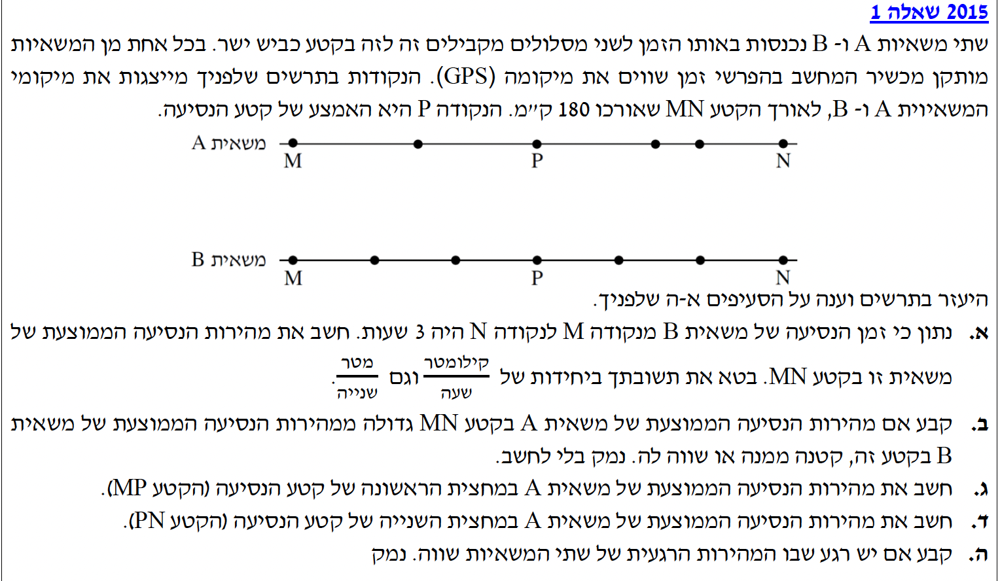

פתרון מודרך, צעד-אחר-צעד

בקטע PN, המהירות הממוצעת של משאית A היא 60 קמ"ש, אך מהירותה אינה קבועה. מכאן נובע שבהכרח ישנם רגעים בקטע זה שבהם מהירותה גדולה מ-60 קמ"ש, ורגעים שבהם מהירותה קטנה מ-60 קמ"ש.
מכיוון שמהירות היא גודל פיזיקלי רציף (היא לא יכולה "לדלג" מערך לערך בבת אחת), כדי שמשאית A תעבור ממהירות שמעל 60 קמ"ש למהירות שמתחת ל-60 קמ"ש, היא חייבת לעבור ברגע מסוים בדיוק בערך של 60 קמ"ש.
היות שמהירותה של משאית B היא תמיד ולכל אורך הדרך 60 קמ"ש, באותו רגע ממש שבו משאית A מגיעה ל-60 קמ"ש, המהירויות של שתי המשאיות ישתוו.